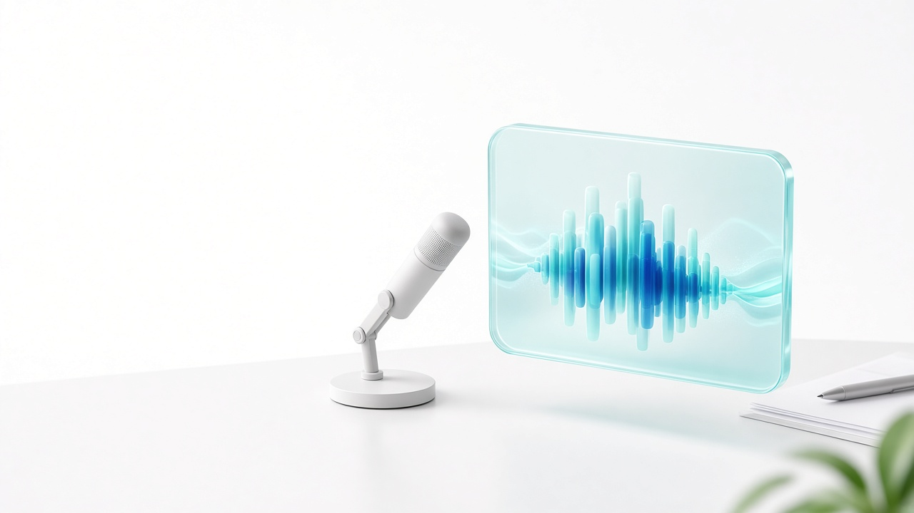
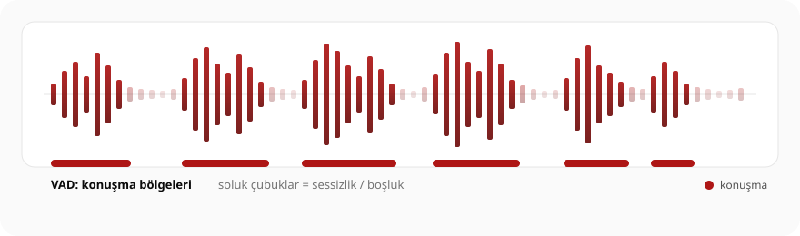
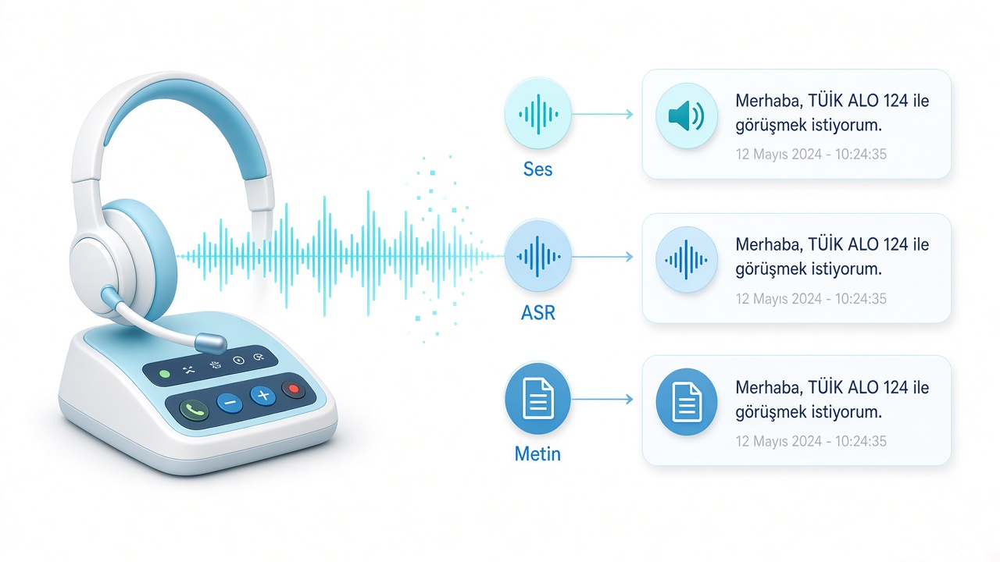
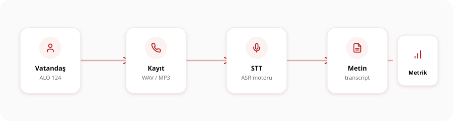
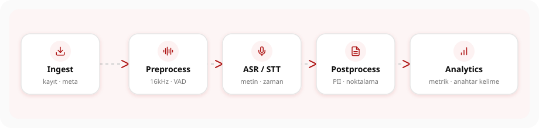

Mühendislik Laboratuvarı
TÜİK ALO 124 tarzı çağrı merkezi sesinden speech-to-text boru hattına — sentetik demo, eğitim amaçlı.

Sentetik / demo ses · Gerçek kişisel veri yok · Resmi istatistik veya operasyonel karar için kullanılmaz
Gündem
Eğitim oturumu01 · Bağlam
ALO 124, Türkiye İstatistik Kurumu (TÜİK)’nun resmi çağrı merkezi hattıdır. Bu slaytlar eğitim bağlamı için özetler; kurum adına resmi açıklama değildir.
02 · Ses varlıkları

03 · Pipeline

Ölçülebilir: gecikme, hata oranı, redaksiyon kapsamı, anahtar kelime doğruluğu.
03 · Pipeline

Lab’de bu akış sentetik örneklerle tekrarlanır; gerçek ALO 124 araması yapılmaz.
03 · Pipeline

03 · Pipeline
04 · Gizlilik
05 · Lab
npm installnpm run samples (ffmpeg gerekir)npm run dev → http://127.0.0.1:43123npm run slides veya /slides/index.htmlÜcretli API anahtarı gerekmez. Mock ASR çevrimdışı çalışır.
05 · Lab
public/samples/ içinden örnek seçin veya WAV/MP3 yükleyinÖzet
İyi çalışmalar — speech-to-text-lab
TÜİK logosu eğitim amaçlı kullanılmıştır; bu proje resmi bir TÜİK ürünü veya onayı değildir.